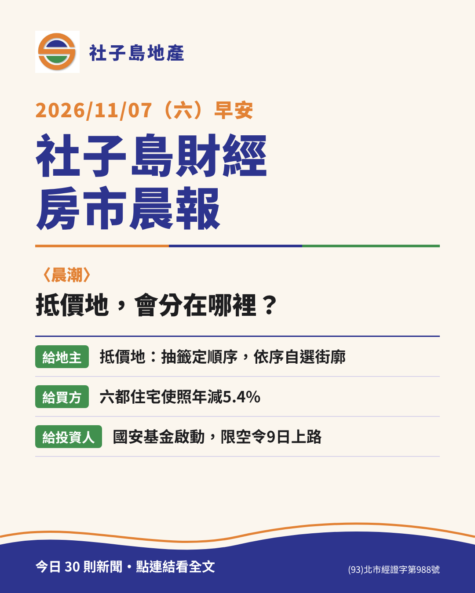

2026/11/07 (六) 早安
社子島財經房市晨報｜抵價地，會分在哪裡？
今日 30 則財經與房市新聞，依主題分成 10 類，社子島、主商圈與台北市的新聞排在最前面。點標題就能開啟原文。
〈潮汐表〉今天的三道潮水
- 給地主區段徵收的抵價地，是在重新規劃後的新街廓裡選配，以公開抽籤決定順序、地主依序自選，不是把原地號原樣發還；細節以市府公告為準。
- 給買方六都前三季住宅使照年減5.4%、台南近腰斬，北市預售推案量縮；新屋變少，看屋可把中古屋一起比較。
- 給投資人台股6日跌1,873點收39,701點，國安基金第10度啟動、限空措施9日上路；美股6日費半反彈4.21%、台積電ADR漲6.33%。
〈晨潮〉
抵價地，會分在哪裡？
昨天阿公從威靈廟走回家，停在自家田邊看了很久，問我們：「若是領抵價地，彼塊地欲分佇佗位？是會當家己揀，抑是愛抽籤？阮敢會分轉來原本這个所在？」這個問題，幾乎是每一位選擇抵價地的地主心裡最在意的事。今天週六，我們慢慢說。
先說一個常被誤會的地方：抵價地不是把原來那塊地號「還」給您。區段徵收會把整個地區重新規劃，道路、公園、排水與街廓都重新畫過，原本的地界其實已經不存在了；地主領回的，是開發完成後新街廓裡的一塊土地。所以「分在哪裡」，要從新的街廓圖開始看。
那是自己選，還是抽籤？答案是兩個都有。內政部曾釋示，依《區段徵收作業補充規定》，抵價地分配作業要點應採「原土地所有權人自行選擇街廓，並以公開抽籤」的原則訂定。一般的做法是：主管機關先召開分配說明會，公布各街廓的分配區塊、配地進行方向、容積率與最小分配面積等圖說；再以公開抽籤決定配地順序，地主依抽到的順序，選擇自己要配在哪個區塊。
能分多少面積？以臺北市的抵價地分配作業要點為例，是用地主的「權利價值」來換算：您的補償地價占全區補償地價總額的比例，乘上預計抵價地總地價，再除以所選區塊的區段徵收後評定地價。也就是說，選地價較高的街廓，分到的面積就比較小；選地價較低的，面積比較大。權利價值不夠所選區塊的最小分配面積時，可以在期限內和其他地主協商、申請合併分配，或改領現金。
抵價地分配，先記住四件事
- ① 在哪裡分：在重新規劃後的新街廓裡選配，不是原地號原樣發還。
- ② 怎麼排順序：公開抽籤決定配地順序，地主依序自行選擇街廓（分配區塊）。
- ③ 分多少：權利價值 ÷ 所選區塊的評定地價；選地價高的區塊，面積就小。
- ④ 不夠最小面積：可申請合併分配，或改領現金。實際以各案公告的作業要點為準。
至於能不能分回原來的位置？制度保障的是「公開、公平的順序」和「自己選擇的權利」，並沒有保證一定回到原地；而且原本那一帶，換算下來不一定最划算。所以在說明會之前，家裡可以先做三件事：確認持分與補償地價、全家先談好要一起配還是分開配、把街廓圖和地價表看懂。社子島實際的分配區塊與作業要點，以市府屆時公告為準。
今天主商圈的新聞，社子島仍在選戰裡各說各話；週五台股大跌、國安基金啟動，提醒大家先穩住資金安排，往下滑就能看到。
——社子島地產團隊
主商圈：社子島・北士科・關渡洲美平原2 則
11/4起社子島與松機遷建誰先誰後的交鋒仍在延續（背景報導，11/5～11/6無新進度）；北士科、關渡洲美平原本週無新進度
台北市2 則
北市預售推案量縮、解約增加；專家帶看房價凹陷區
市地重劃・區段徵收1 則
台東火車站前約45公頃自辦市地重劃，成為縣長選戰攻防焦點
利率・房貸・資金4 則
國安基金第10度啟動、可動用最高5,000億元；金管會限空5措施11/9上路；新台幣6日收32.768元
房市走向3 則
六都前三季住宅使照年減5.4%、台南近腰斬；專家看房市還要盤兩年
土地・產業用地1 則
北市不到30坪的小基地也能蓋迷你建案，每坪最高成交168萬元
都更・合建3 則
北市都更政見大體檢：審查量能是瓶頸；新北新店曦公辦都更由愛山林取得、預計投入66億元
稅務與法律實務2 則
地價稅繳到11/30，課稅基準日為8/31；剛買房的人先看稅單上的所有權人與稅率
高齡與人口4 則
共生之家試辦4～6人合住、家人可同住；長照3.0推社區復能與夜間照顧；建材業轉攻高齡宅
今日財經大事8 則
台股6日跌1,873點收39,701點、史上第4大收盤跌點，成交1.24兆元；美股6日道瓊跌237點，費半反彈4.21%、台積電ADR漲6.33%
〈阿公講古〉
週六早上，孫子不用上班，陪阿公到島頭公園走走。河邊的風有點涼，幾個囡仔在草地上追著風箏跑。
「原來是照籤仔的順序揀，」阿公笑了一下：「按呢嘛好，逐家公平，無人會當講話。」
他指著遠處說，以前那裡都是菜園，誰家的田在哪一條溝旁邊，大家閉著眼睛都知道；「以後路開了、地墊高了，阮可能就認袂出來矣。」孫子說，到時候他會把舊地圖和新街廓疊在一起，指給阿公看。
風箏飛得很高，阿公抬頭看了一陣，又想到一件事：「若是分著的地，比阮應該領的較大抑是較細，敢著補錢？領轉來的地，以後若賣掉，稅是按怎算？」
阿公的問題，我們明天回答。
〈廟口泡茶區〉
阿公說完，和孫子走到廟口榕樹下，茶已經泡好了。分配說明會的圖說看不懂，可以帶來一起攤開看。
若您正在找一塊值得耕耘的地，告訴我們您想做什麼，我們幫您先篩過一輪。
想問問您：如果是您，抵價地會想選離老家近一點的地方，還是地價、面積比較划算的位置？打個電話告訴我們，下次泡茶時一起聊。
不急著成交。我們是守在堤邊的人，守著每一塊土地的權益，直到把它交到願意耕耘它的人手上。
📞 歡迎先來電 0922-252-969先通個電話聊聊，再約時間來廟口喝茶。
 掃描 QR code，加 LINE 好友LINE ID：@shezidao💬 加 LINE
掃描 QR code，加 LINE 好友LINE ID：@shezidao💬 加 LINE
社子島地產團隊｜service@shezidao.com.tw
台北市士林區延平北路九段288號
週一至週六 9:30–18:00（週四 9:30–13:30），週日公休📞 來電 0922-252-969
本站由社子島地產開發有限公司經營，為民間不動產資訊網站，非臺北市政府官方網站；政府公告請以臺北市政府與地政局網站為準。
本期新聞由社子島地產團隊自經濟日報、聯合新聞網、中央社、自由時報、中時新聞網、公視新聞網、中天新聞網、鉅亨網、鏡週刊、ETtoday房產雲、新頭殼、理財周刊、康健雜誌、數位時代、蕃新聞、Yahoo奇摩新聞、Yahoo股市 等媒體收集，標題照原文，點擊即可開啟原始報導；法規說明僅供參考，實際權利義務以主管機關公告為準。〈晨潮〉〈阿公講古〉為本團隊之參考意見，不構成投資建議，亦不代表支持任何候選人。〈阿公講古〉的阿公，是我們依島上長輩的身影寫成的人物。